Costa Blanca · Villajoyosa
Inmuebles en venta en Villajoyosa
Pisos nuevos y áticos cerca de la playa, muchos con vistas al mar, en una auténtica ciudad española con carácter propio. Estos son los inmuebles que vendemos hoy en Villajoyosa, con una breve guía de las zonas y lo que cuesta de verdad comprar.
- 22inmuebles en venta en Villajoyosa
- desde 254.000 €un piso nuevo
- unos 35 minal aeropuerto de Alicante-Elche
- 10 minhasta Benidorm
En venta ahora
Inmuebles en venta en Villajoyosa
Pisos nuevos de 1 a 3 dormitorios, áticos y dúplex con grandes terrazas, la mayoría a pocos cientos de metros de la playa. Algunos tienen licencia turística. Los precios son los de hoy; pregúntenos por la disponibilidad actual.
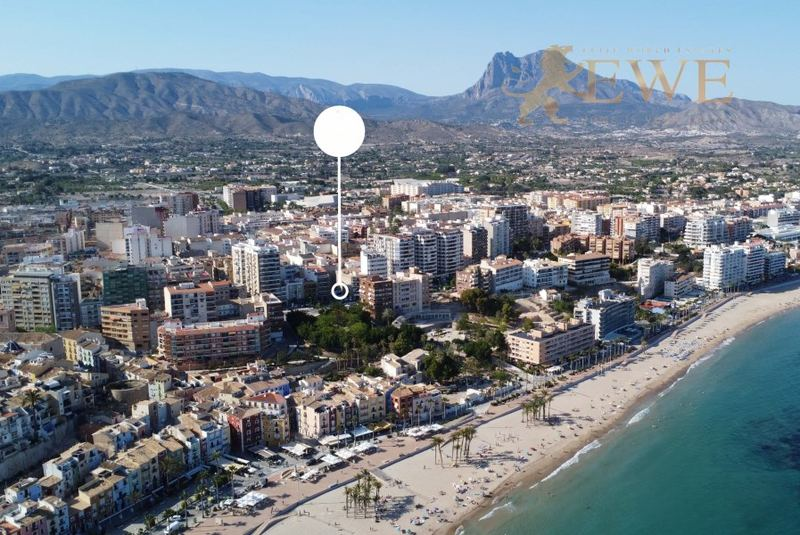
Entrega inicio 2027Villajoyosa
New apartment close to the beach in the heart of Villajoyosa
254.000 €
1 dormitorio · 1 baño · 48.14 m²Ref. EWE3296
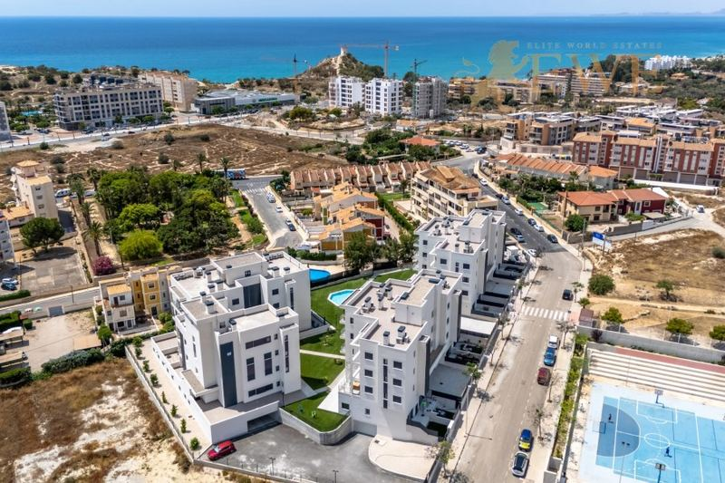
Entrega fin 2026Villajoyosa
Tourist Apartments 900 Metres from the Beach in Villajoyosa
275.000 €
2 dormitorios · 2 baños · 70 m²Ref. EWE3756
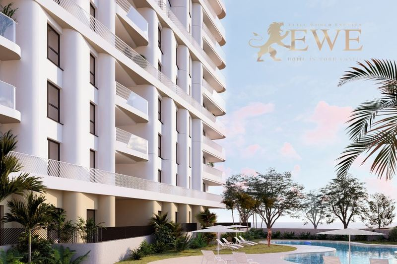
Entrega 2029Villajoyosa
Modern flat 100 metres from the sea in Villajoyosa
285.000 €
1 dormitorio · 1 baño · 40 m²Ref. EWE3567
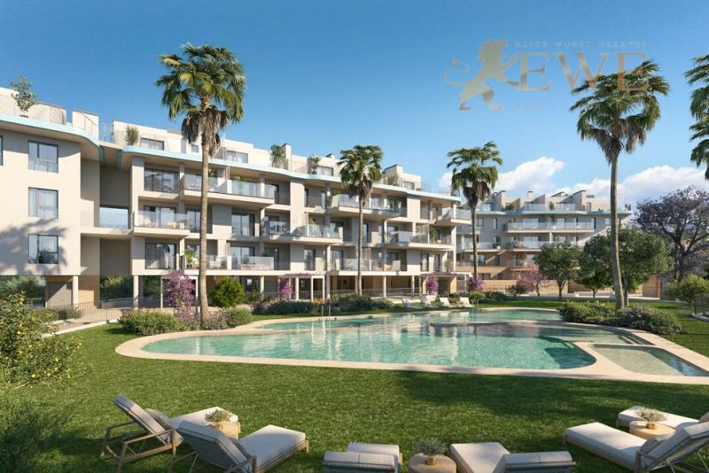
Villajoyosa
Ready apartment with a large terrace 150 m from the beach in Villajoyosa
318.000 €
1 dormitorio · 1 baño · 40 m²Ref. EWE3905
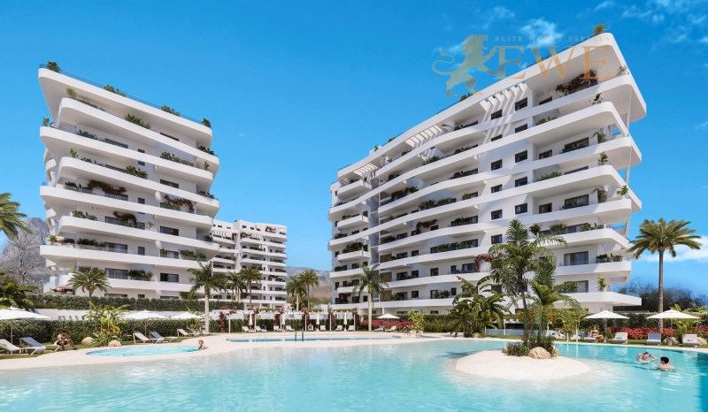
Entrega inicio 2027Villajoyosa
New appartments project on a beautiful beach in Villajoyosa
329.000 €
1 dormitorio · 1 baño · 50 m²Ref. EWE3396
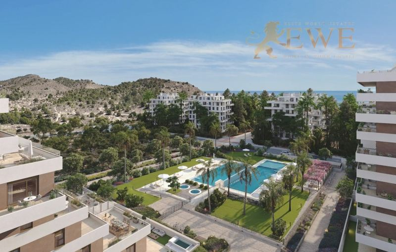
Entrega fin 2026Villajoyosa
Excellent apartment close to the beach in Villajoyosa
350.000 €
2 dormitorios · 2 baños · 60 m²Ref. EWE3294
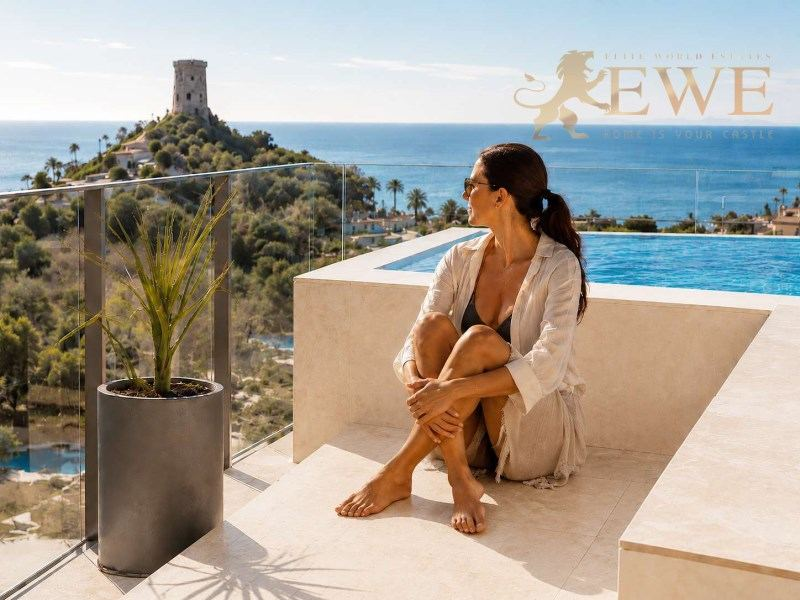
Entrega dic 2028Villajoyosa
New apartments with large terraces 600 m from the beach
385.000 €
2 dormitorios · 2 baños · 67 m²Ref. EWE3896
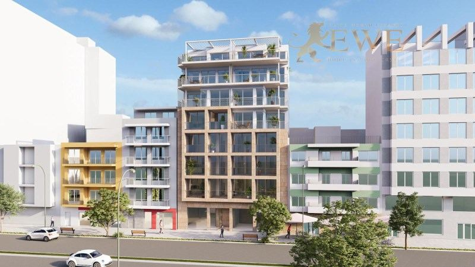
Villajoyosa
Investment in the centre of the charming town of Villajoyosa
418.500 €
2 dormitorios · 2 baños · 65.84 m²Ref. EWE3298
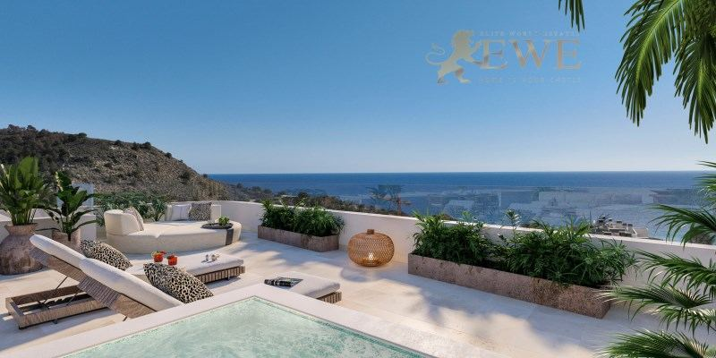
Entrega inicio 2027Villajoyosa
Superb apartment in a modern residential area by the beach in Villajoyosa
424.000 €
2 dormitorios · 2 baños · 68 m²Ref. EWE3397
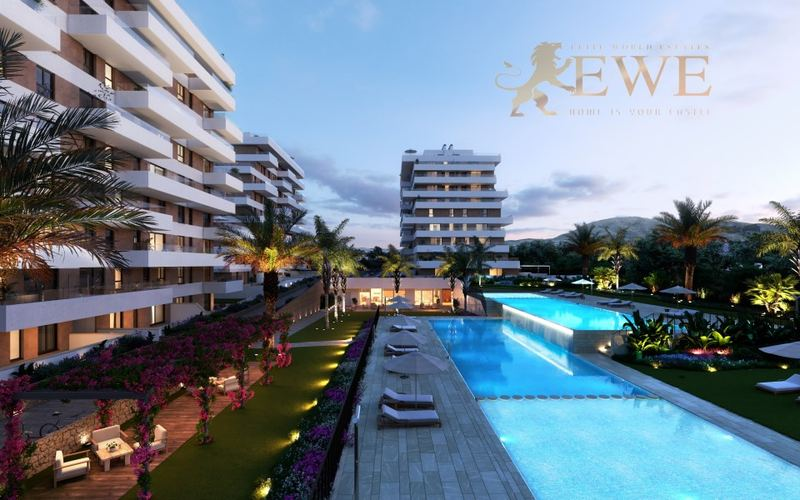
Villajoyosa
Excellent apartment with near the sea in Villajoyosa
425.000 €
3 dormitorios · 2 baños · 81 m²Ref. EWE3300
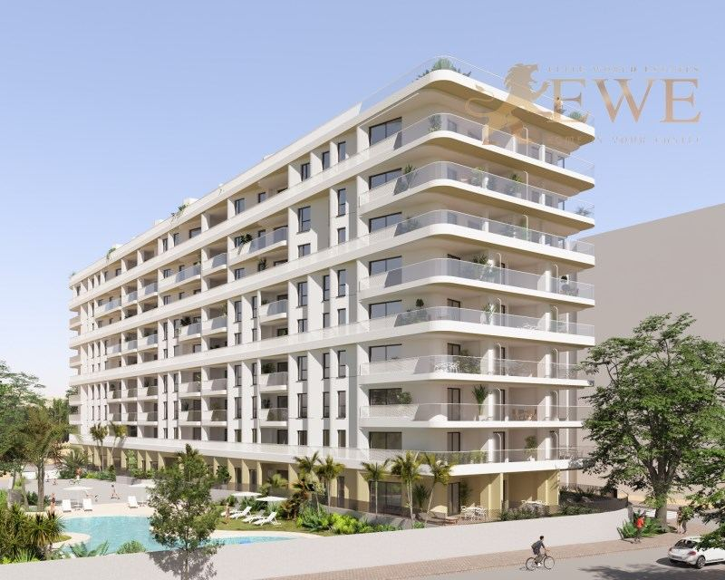
Entrega 2029Villajoyosa
New apartment development 100 metres from the sea in Villajoyosa
425.000 €
2 dormitorios · 2 baños · 67 m²Ref. EWE3568
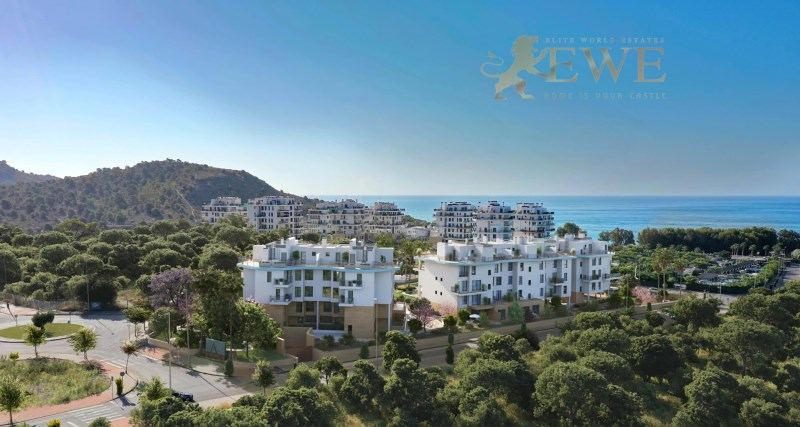
Villajoyosa
Luxury apartment 150 m from the beach in Villajoyosa
445.000 €
2 dormitorios · 2 baños · 65 m²Ref. EWE2252
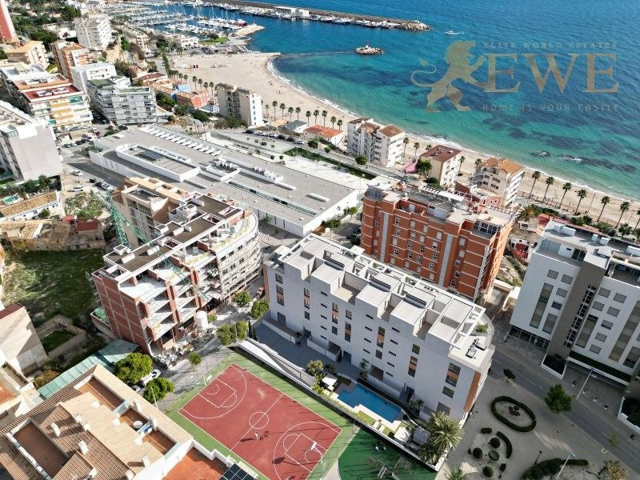
Entrega fin 2026Villajoyosa
Excellent apartment 400 m from the port and beach in Villajoyosa
470.000 €
2 dormitorios · 2 baños · 80 m²Ref. EWE3494
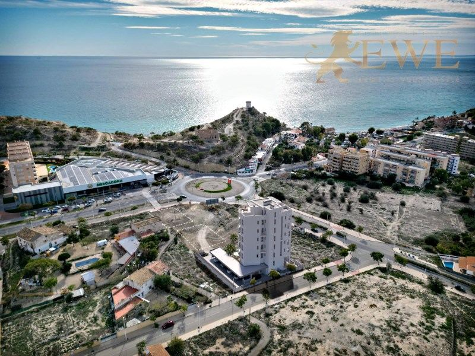
Entrega fin 2026Villajoyosa
Spacious duplex with sea views in Villajoyosa
495.000 €
3 dormitorios · 3 baños · 137 m²Ref. EWE3491
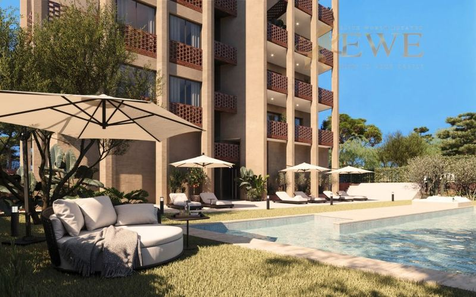
Entrega mediados 2028Villajoyosa
Apartment with tourist license 300m from the sea in Villajoyosa
500.000 €
3 dormitorios · 2 baños · 83.13 m²Ref. EWE3694
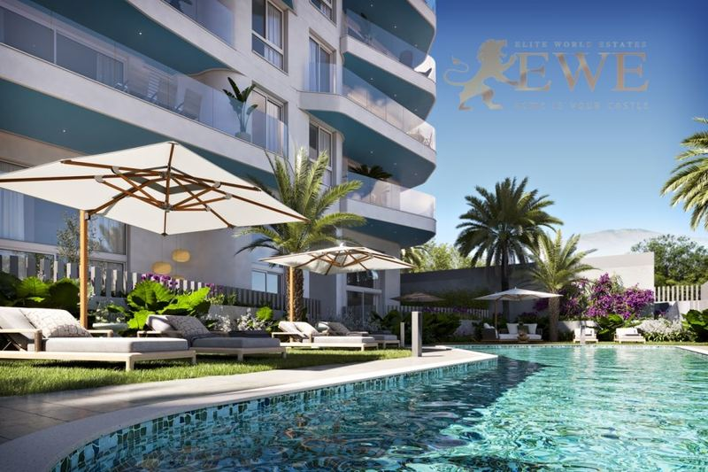
Entrega fin 2026Villajoyosa
Modern duplex with a private terrace and sea views in Villajoyosa
520.000 €
3 dormitorios · 3 baños · 168 m²Ref. EWE3493
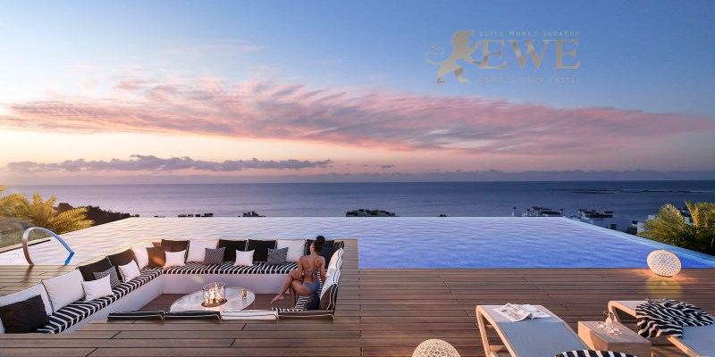
Entrega inicio 2027Villajoyosa
Modern penthouse with sea views in Villajoyosa
535.000 €
3 dormitorios · 2 baños · 93 m²Ref. EWE3398
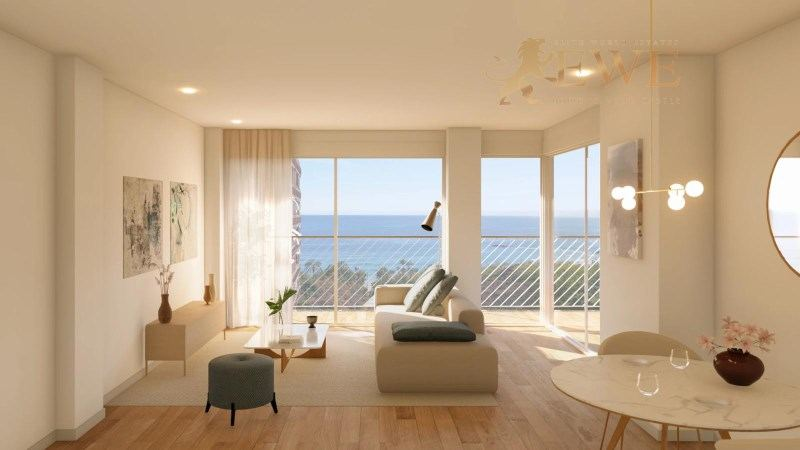
Villajoyosa
Apartments in the centre of the beautiful town of Villajoyosa
560.000 €
3 dormitorios · 2 baños · 77.83 m²Ref. EWE3297
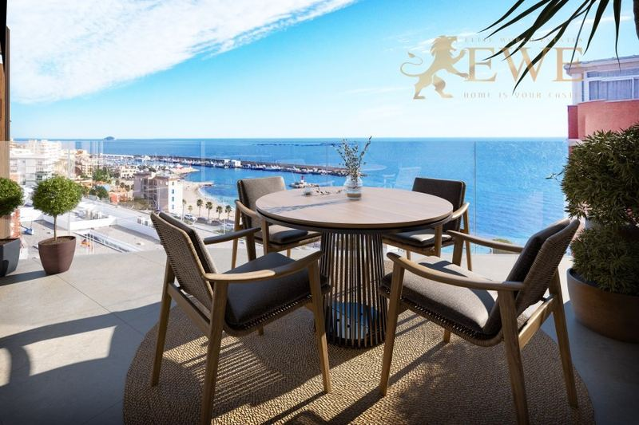
Entrega fin 2026Villajoyosa
Magnificent penthouse with sea views in Villajoyosa
580.000 €
2 dormitorios · 2 baños · 90 m²Ref. EWE3495
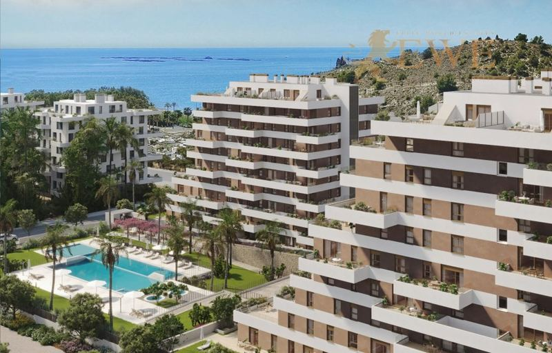
Villajoyosa
Ready-to-Move-In Penthouse with Sea Views Near the Beach in Villajoyosa
635.000 €
3 dormitorios · 3 baños · 92 m²Ref. EWE3353
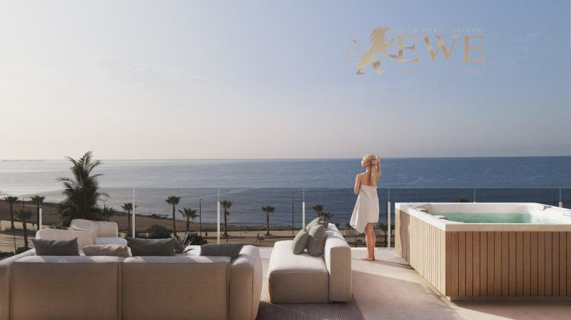
Entrega mediados 2027Villajoyosa
Modern apartment with sea views in Villajoyosa
827.000 €
2 dormitorios · 2 baños · 46 m²Ref. EWE3625
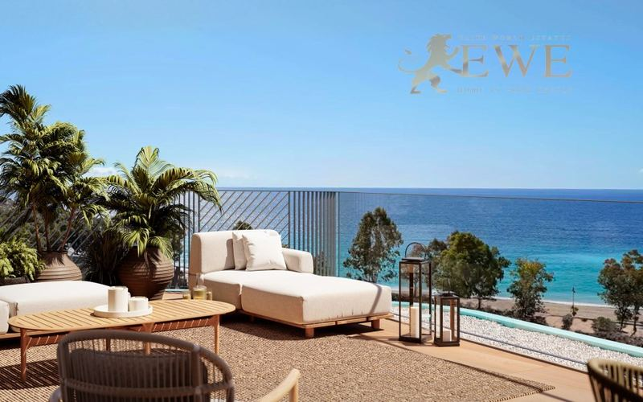
Entrega 2027Villajoyosa
Penthouse on the first line of the sea in Villajoyosa
1.540.000 €
3 dormitorios · 4 baños · 112 m²Ref. EWE1704
Muy cerca
Cerca de Villajoyosa: La Cala
La Cala es la zona de playa en el límite con Benidorm y Finestrat, a pocos minutos al norte de Villajoyosa, con pisos cerca del mar.
La ciudad
Vivir en Villajoyosa
Villajoyosa, o La Vila Joiosa en valenciano, es una ciudad costera de unos 37.000 habitantes entre Alicante y Benidorm. Es conocida sobre todo por las casas de colores de su casco antiguo, que se alzan sobre la desembocadura del río y la playa, y por su larga tradición chocolatera.
La ciudad tiene varias playas a lo largo de su costa: la playa Centro frente a las casas de colores, la larga playa del Paraíso y calas más pequeñas entre medias. El puerto pesquero sigue activo, y el casco antiguo tiene calles estrechas, plazuelas y restaurantes de toda la vida.
Villajoyosa tiene vida todo el año, porque la mayoría de la gente vive y trabaja aquí, y los precios suelen ser más bajos que en Benidorm, a solo 10 minutos. El TRAM une la ciudad con Benidorm y Alicante, y el aeropuerto de Alicante-Elche está a unos 35 minutos en coche.
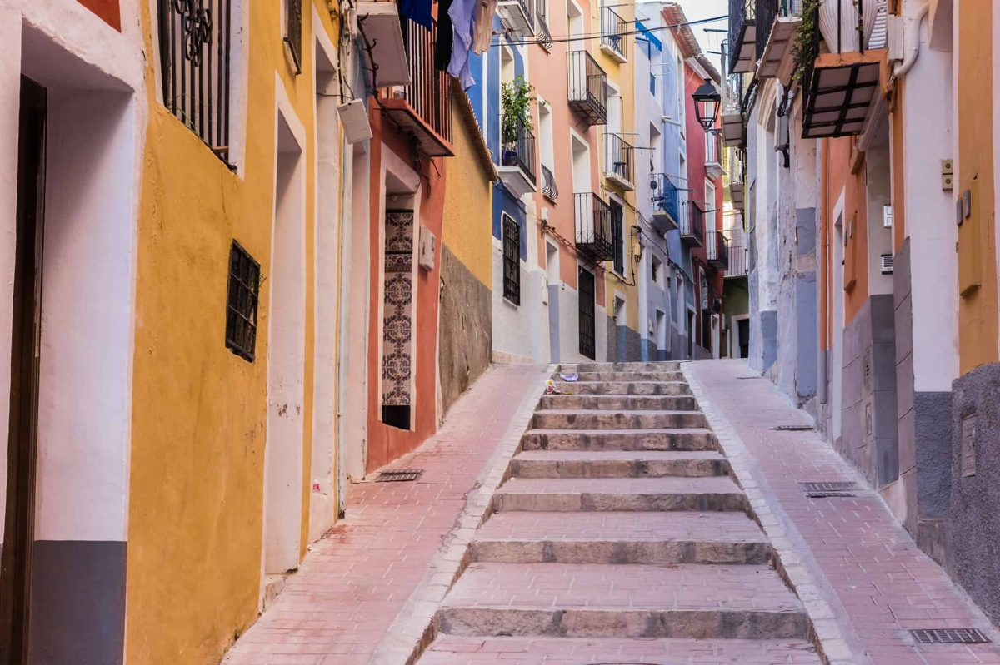
Dónde comprar
Las principales zonas de Villajoyosa
Casco antiguo y paseo marítimo
Las casas de colores, el paseo y la playa principal. Pisos en edificios reformados y nuevos, a un paseo del mar.
Centro
Tiendas, mercados y servicios a pie, a pocos minutos de la playa. Edificios de pisos modernos para vivir todo el año.
Junto al puerto
El puerto pesquero y el deportivo, con restaurantes y una playa más tranquila cerca. Pisos nuevos con vistas al mar.
Playa del Paraíso
Una larga playa a pocos minutos del centro, con residenciales y piscinas. Pisos y áticos cerca de la arena.
Colinas de la costa
Las laderas detrás de la costa entre Villajoyosa y La Cala. Promociones más nuevas con grandes terrazas y vistas al mar.
La Cala
La zona de playa en el límite con Benidorm y Finestrat, con pisos, tiendas y restaurantes cerca del mar.
Presupuesto
Cuánto cuesta comprar en Villajoyosa
Al precio se suman impuestos y gastos. Para un piso nuevo de 425.000 €, por ejemplo, son 42.500 € de IVA y 5.950 € de AJD, más notaría, registro y abogado. En la segunda mano los impuestos son otros, así que pídanos siempre la cifra exacta de la vivienda que le guste.
| Obra nueva | 10 % IVA + 1,4 % AJD |
|---|---|
| Segunda mano | 9 % ITP, 11 % por encima de 1 millón de € |
| Notaría, registro, abogado | aprox. 1,5–2,5 % del precio |
| Cada año | IBI y gastos de comunidad, según la vivienda |
Preguntas
Comprar vivienda en Villajoyosa: preguntas y respuestas
¿Cuánto cuesta un piso en Villajoyosa?
Nuestros pisos en Villajoyosa empiezan hoy en 254.000 €. La mayoría de los pisos de 2 o 3 dormitorios que vendemos cuestan entre 350.000 € y 580.000 €, según la distancia a la playa y las vistas. Los áticos con vistas al mar cuestan desde unos 535.000 €, y un ático en primera línea 1.540.000 €.
Villajoyosa o Benidorm: ¿qué es mejor?
Benidorm es una ciudad de vacaciones con torres altas y vida nocturna. Villajoyosa es una auténtica ciudad española, con un ritmo más tranquilo y su propio casco antiguo, y los precios suelen ser más bajos. Benidorm está a solo 10 minutos en coche o en TRAM.
¿Puedo alquilar un piso en Villajoyosa?
Sí, y algunos de nuestros pisos ya tienen licencia turística. El alquiler vacacional necesita una licencia turística en el registro de la Comunitat Valenciana, y algunos edificios lo limitan, así que compruébelo antes de comprar. Consulte nuestra guía sobre las normas del alquiler de corta duración.
¿A qué distancia está Villajoyosa del aeropuerto?
El aeropuerto Alicante-Elche Miguel Hernández está a unos 35 minutos en coche. También puede ir en TRAM hasta Alicante.
¿Qué gastos hay además del precio?
En obra nueva se paga un 10 % de IVA y un 1,4 % de AJD. En segunda mano se paga un 9 % de ITP (11 % por encima de 1 millón de €). Notaría, registro y abogado suman alrededor de un 1,5–2,5 %.
¿Pueden comprar vivienda los extranjeros en Villajoyosa?
Sí. Cualquier persona puede comprar una vivienda en España. Necesita un NIE y normalmente una cuenta bancaria española, y le ayudamos con las dos cosas. Consulte nuestra guía del NIE.


¿Busca casa en Villajoyosa?
Cuéntenos su presupuesto y lo que necesita. Respondemos en un día laborable, en español, inglés, alemán o polaco.